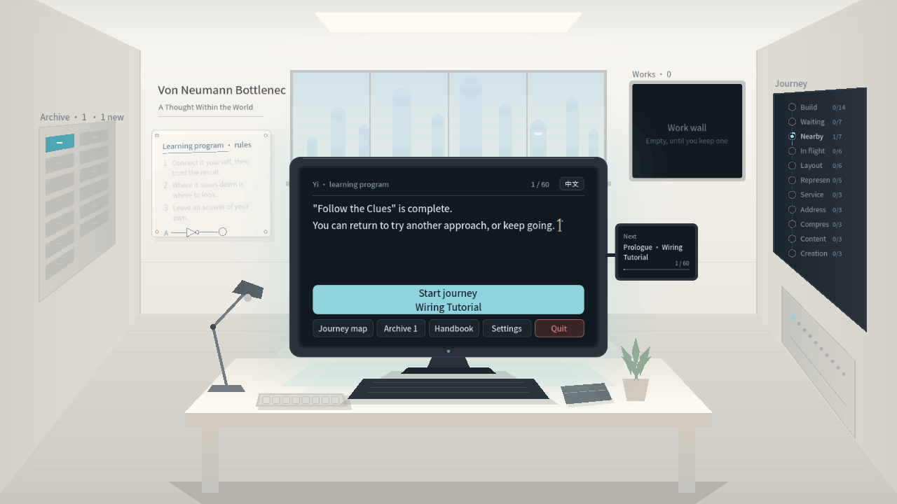
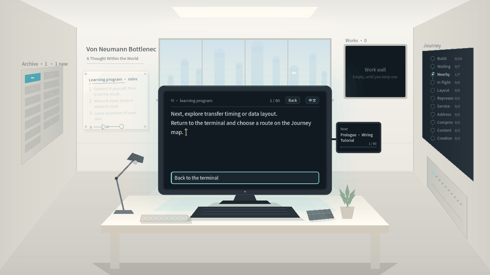
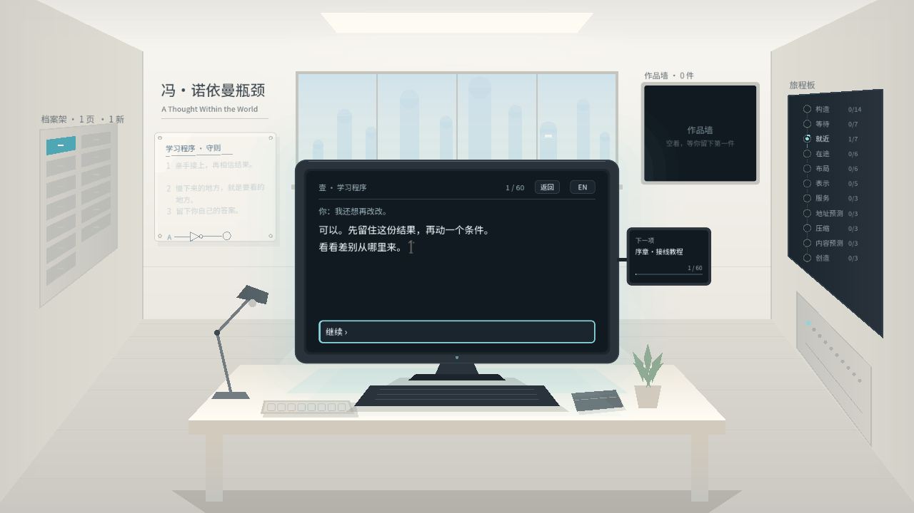

终端语言切换
实际获得章末回应后切换语言；普通完成短句另用已完成任务的呈现夹具。Viewport事件，不代表原生输入、前置旅程或真人理解验收。
修复前 · before-en-after-language-question修复前 · before-zh_CN-before-language-question最终（ordinary-response 为呈现夹具） · en-after-exit-language最终（ordinary-response 为呈现夹具） · en-after-language-question最终（ordinary-response 为呈现夹具） · en-before-language-question最终（ordinary-response 为呈现夹具） · en-ordinary-response-fixture
最终（ordinary-response 为呈现夹具） · en-translated-answer最终（ordinary-response 为呈现夹具） · en-translated-exploration
最终（ordinary-response 为呈现夹具） · zh_CN-after-exit-language最终（ordinary-response 为呈现夹具） · zh_CN-after-language-question最终（ordinary-response 为呈现夹具） · zh_CN-before-language-question 最终（ordinary-response 为呈现夹具） · zh_CN-ordinary-response-fixture最终（ordinary-response 为呈现夹具） · zh_CN-translated-answer
最终（ordinary-response 为呈现夹具） · zh_CN-ordinary-response-fixture最终（ordinary-response 为呈现夹具） · zh_CN-translated-answer
最终（ordinary-response 为呈现夹具） · zh_CN-translated-exploration